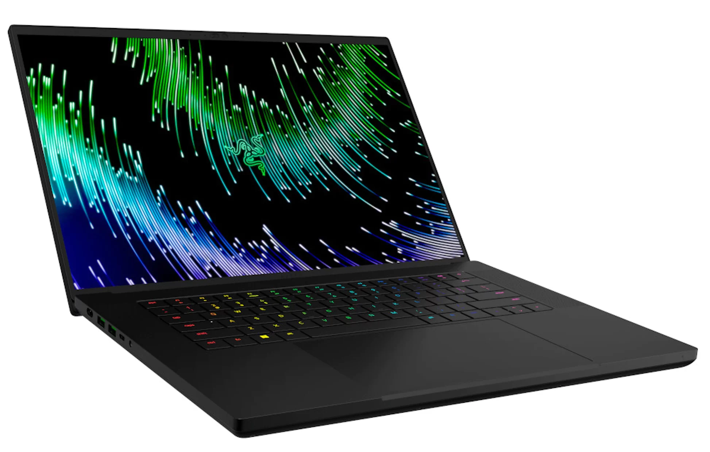

Return of the Mac, Apple have done it again! We will be showcasing the best Apple laptops in the market. From the most expensive to the most innovative, The list covers all tech thirsty fans most desired must haves of the year.
Our Mac Top Picks Are
Prices for the above in order
MacBook Pro 16" M3 Max (2024)

Windows know how to make showstopping laptops for those who know what they want and what they want is what they get. They have crafted some of the best laptops in the last few years, competing with their competitors and blowing them out the water with these particular designs we've chosen as our top picks.
Our Windows Top Picks Are
Prices for the above in order
Acer Nitro 16
Razer Blade 16
